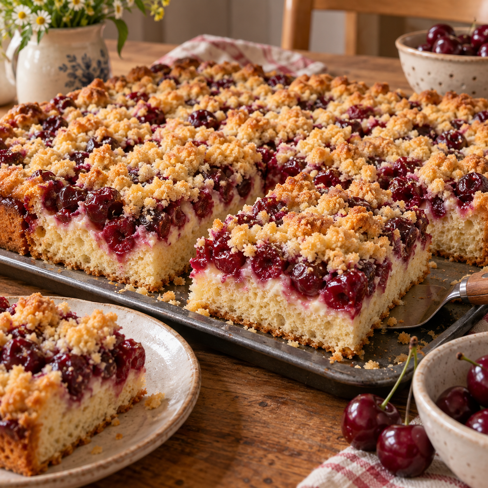

Was Süßes aus dem Ofen
Streuselkuchen mit Kirschen

Ein lockerer Hefekuchen mit saftigen Kirschen und einer dicken Schicht knuspriger Streusel. Die Sahne kommt direkt nach dem Backen über den heißen Kuchen und macht ihn besonders saftig.
Zutaten
Für den Hefeteig
450–500 gMehl
2 Pck.Trockenhefe, alternativ 1 Würfel frische Hefe
1Ei
150 gJoghurt
120 mlMilch, lauwarm
130 gButter, zerlassen
150 gZucker
1 Pck.Vanillezucker
Für die Streusel
200 gButter, weich
300 gMehl
150 gZucker
1 Pck.Vanillezucker
1 PriseSalz
Außerdem
1 GlasKirschen
200 mlSchlagsahne
Zubereitung
- Für den Hefeteig zunächst 450 g Mehl mit der Trockenhefe, dem Zucker und dem Vanillezucker vermischen. Bei frischer Hefe diese vorher in der lauwarmen Milch auflösen.
- Ei, Joghurt, lauwarme Milch und die nur noch handwarme zerlassene Butter dazugeben. Alles zu einem glatten, weichen Hefeteig verkneten. Klebt der Teig noch stark, nach und nach etwas vom restlichen Mehl einarbeiten.
- Den Teig abgedeckt an einem warmen Ort etwa 60 Minuten gehen lassen, bis er sein Volumen deutlich vergrößert hat.
- Inzwischen die Kirschen in einem Sieb sehr gut abtropfen lassen. Für die Streusel weiche Butter, Mehl, Zucker, Vanillezucker und Salz mit den Händen zu groben Streuseln verkneten.
- Ein Backblech fetten oder mit Backpapier auslegen. Den Hefeteig darauf gleichmäßig verteilen und mit den Händen bis in die Ecken drücken. Die Kirschen darauf verteilen und anschließend vollständig mit den Streuseln bedecken.
- Den belegten Kuchen noch einmal etwa 20 Minuten ruhen lassen. Währenddessen den Backofen auf 180 °C Ober-/Unterhitze vorheizen.
- Den Streuselkuchen auf mittlerer Schiene etwa 30–35 Minuten backen, bis die Streusel goldbraun sind.
- Die kalte Schlagsahne direkt nach dem Backen gleichmäßig über den noch heißen Kuchen gießen. Den Kuchen auf dem Blech auskühlen lassen, damit die Sahne einziehen kann.
Tipp
Die Kirschen wirklich gut abtropfen lassen. So bleibt der Hefeboden locker und die Streusel werden schön knusprig.